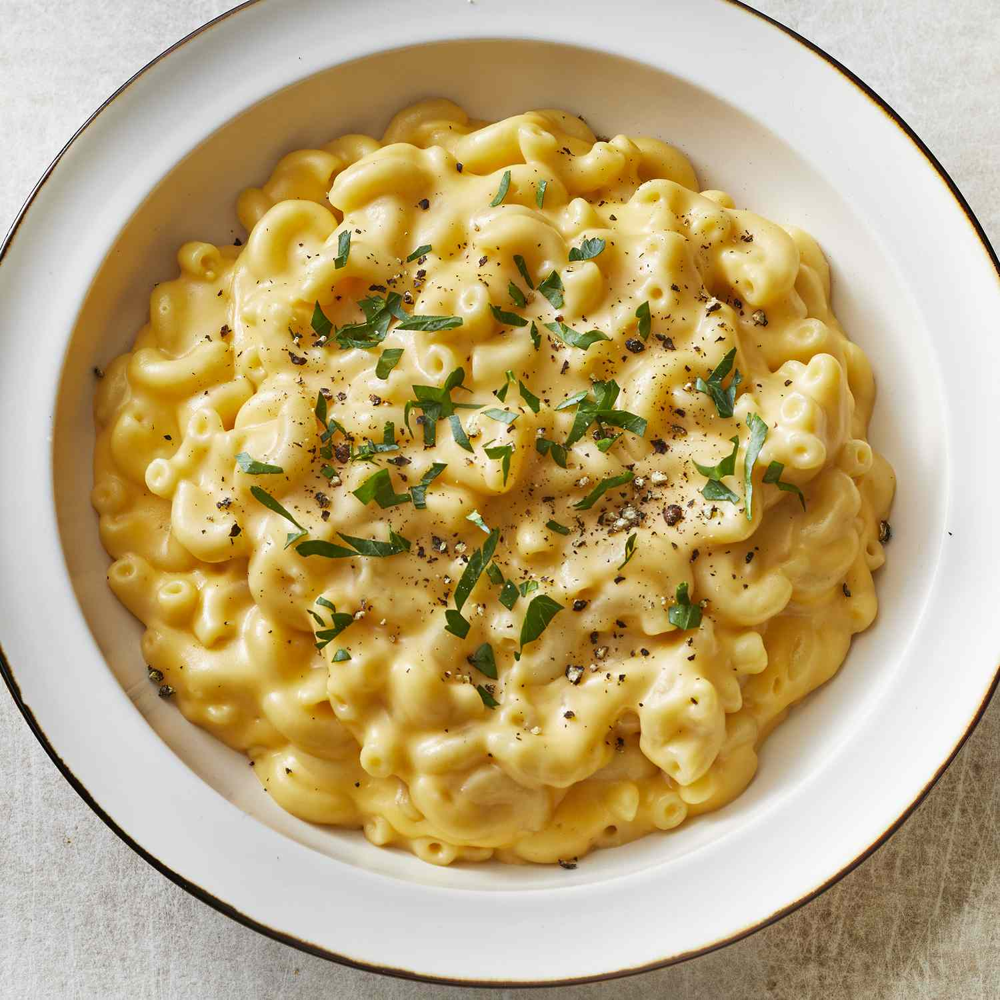

Mac and Cheese

A delicious mac and cheese fit for the father of Gods (and gamers)
A quick, cheap, and tasty macaroni and cheese dish that can rival the ones
prepared in gourmet restaurants.
Ingredients
- 1 (8 ounce) box elbow macaroni
- 1/4 cup butter
- 1/4 cup all-purpose flour
- 1/2 teaspoon salt
- ground black pepper
- 2 cups milk
- 2 cups shredded Cheddar cheese
Steps
-
Cook elbow macaroni in lightly salted boiling water, stirring
occasionally for 8 minutes
- Melt butter in a saucepan over medium heat
- Add flour, salt, and pepper and stir until smooth (~5 minutes)
-
Pour milk slowly, while stirring continuously. Continue until mixture is
smooth and bubbling (~ 5 minutes)
- Add Cheddar cheese and stir until melted (2-4 minutes)
- Drain macaroni and fold into cheese sauce until coated
- Serve!